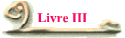
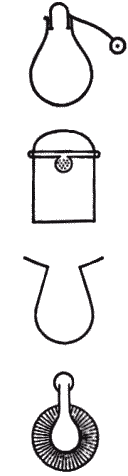
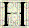
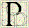
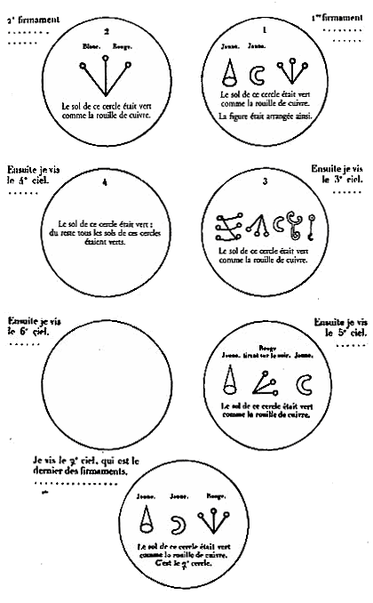

Livre III : La chimie au Moyen-Age


istoires des Sciences. La chimie au Moyen-Age qui est le titre complet de cet ouvrage, a été publié pour la première fois en 1893 sous les auspices du ministère de l'Instruction Publique. Composé de 3 volumes, il constitue un remarquable recueil de traités alchimiques syriaques et arabes dont certains n'avaient jamais été publiés auparavant. Les traités syriaques, traduits par Rubens Duval, sont tirés des manuscrits du British Museum de Londres et de la bibliothèque de Cambridge ; les traités arabes, traduits par Octave Houdas, proviennent quant à eux des bibliothèques de Paris et de Leyde. Marcellin Berthelot analyse et commente ces précieux documents en les comparant notamment aux plus vieux traités des alchimistes grecs publiés dans ces précédants ouvrages.
 Le Liber Sacerdotum par Berthelot
Le Liber Sacerdotum par Berthelot

armi les ouvrages inédits que renferment les vieilles collections alchimiques manuscrites de la Bibliothèque nationale, il en est deux qui ont fixé plus particulièrement mon attention : ce sont le Liber Sacerdotum et le Liber de septuaginta. Tous deux sont donnés comme traduits de l'arabe et attribués à un personnage nommé Johannes (Le Liber Sacerdotum à la fin ; le Liber de septuaginta dans son titre). Le Liber Sacerdotum se rattache à la vieille tradition égyptienne du « Livre tiré du sanctuaire des temples », qui figure chez les alchimistes grecs. Il semble même exister une certaine connexité entre ce livre et le Livre des soixante-dix, en raison de quelques titres et indications où figure le même chiffre (n° 20 à 26 : « préceptes précieux parmi les 70 » - n° 95 : « Avis précieux parmi les 70 » - n° 101 : « précepte général parmi les 70 », etc.), à moins que le nombre soixante-dix, dans les quatre recettes où il existe, ne se rapporte à un opuscule spécial, qui aurait renfermé un nombre précisément égal de recettes ou préparations. Ceci étant admis, les deux ouvrages peuvent être examinés comme indépendants. Je les étudierai séparément :- Le Livre des soixante-dix est surtout une œuvre de théorie ; je consacrerai à son analyse un article spécial du présent recueil.
- Le Liber Sacerdotum est plus important, c'est une collection de recettes, relatives aux préparations de chimie minérale, à la transmutation des métaux et à la fabrication des couleurs et des pierres précieuses. Cette collection est semblable aux Compositiones et à la Mappae Clavicula, on y trouve un certain nombre de recettes communes avec ces deux ouvrages dont quelques-unes sont identiques à celles du papyrus de Leyde. Cependant, la rédaction en diffère notablement, ce qui indique qu'elles n'ont pas été copiées les unes sur les autres mais qu'elles relèvent d'une même tradition. Le Liber Sacerdotum paraît un peu plus récent que la Mappae Clavicula, il est certainement traduit de l'arabe tandis que la Mappae Clavicula, remontant au moins au Xe siècle, dérive directement de la tradition antique. Au contraire, il est plus ancien que les ouvrages techniques d'Eraclius (au moins la partie en prose de ce dernier) et de Théophile, ouvrages écrits plus méthodiquement et qui portent les caractères d'une rédaction plus moderne. En raison de ces relations, il m'a paru intéressant d'examiner le Liber Sacerdotum tel qu'il est transcrit dans le manuscrit latin 6514 de la Bibliothèque nationale de France. L'auteur du livre est inconnu, sauf le nom de Johannes ; il a d'ailleurs travaillé sur des documents plus vieux, en partie traditionnels, et remontant à l'Antiquité. [Extrait du Journal des Savants - Janvier 1893]
 Le livre de Crates
Le livre de Crates
lusieurs traités alchimiques, écrits en arabe et contenus dans les manuscrits de la Bibliothèque nationale de France et dans celle de l'université de Leyde, ont été publiés par Marcellin Berthelot dans L'alchimie arabe, le troisième volume de La chimie au Moyen-Age. Parmi eux, le Livre de Crates (manuscrit 440 de Leyde) est sans doute l'un des plus intéressants et certainement l'un des plus anciens ; à ce titre, il est à placer parmi les deux ou trois plus importants traités alchimiques, à côté de la Table d'Émeraude, attribué à Hermès Trismégiste, et de la Tourbe des Philosophes, attribué à Aristaeus. La plupart des exégètes s'accorde pour le dater du IXe siècle, mais un certain nombre d'ente eux pense qu'il pourrait être encore plus ancien ; en effet, la conclusion du Livre de Crates suggère que ce traité est une production de Khâled ben Yezid (mort en 708), qui, d'après le Liber de compositione alchimiae, était l'élève du légendaire moine syrien Marianus et qui, d'après Kitb-al-Fihrist, est supposé avoir introduit l'alchimie au cœur de l'Islam. Cependant, d'après son contenu largement influencé par l'esprit des anciens alchimistes grecs, il est probable que ce texte soit d'origine grec mais qu'il ait été trouvé, annoté et commenté par un Arabe musulman ; son origine pourrait alors être recherchée à Alexandrie, ou même au Temple de Sérapis qui possédait également une bibliothèque, annexe de la grande.
Quoiqu'il en soit, ce livre est tout aussi extraordinaire par les informations qu'ils révèlent que par ses origines mystérieuses. On y trouve notamment des figures de certains appareils (4 dessins de gauche, de haut en bas : alambic avec son appareil et le symbole solaire, kérotakis, appareil pour digestion et matras au bain de sable) ainsi que des symboles de métaux à peu près semblables à ceux du papyrus X de Leyde. Il permet entre autre de comprendre le codage mis en place dans l’Alchimie par Bolos de Mendès. Celui qui écrit sous le pseudonyme de Cratès est le premier à nous dévoiler clairement les noms différents que reçoit la Pierre à chaque changement de couleur. Ainsi ce ne sont pas 7 ou 10 substances différentes qu’il faut mélanger, car ces substances ainsi nommées ne sont que des analogies qui déterminent la qualité que prend la Pierre au fur et à mesure de sa transformation, c'est-à-dire au fur et à mesure de ses changements de couleur.

 Sommaire
Sommaire
- Tome I : Essai sur la transmission de la science antique au Moyen-Age
- Doctrines et pratiques chimiques
- Traditions techniques et traductions arabo-latines.
- Le Liber Ignium de Marcus Grecus
- Le Liber Sacerdotum et le Liber de septuaginta de Johannes
- Tome II : L'alchimie syriaque
- Introduction
- Traités d'alchimie syriaques et arabes
- Traduction, notes et commentaires
- Reproduction de signes et de figures d'appareils
- Tome III : L'alchimie arabe
- Introduction historique
- Le livre de Crates
- Le livre d'El-Habib
- Le livre d'Ostanès
- Le livre de Djâber
- Traduction, notes et commentaires
 Internet
Internet
Une transcription du Livre de Crates est téléchargeable en cliquant sur ce livre : &


Accueil · Biographie · Livre I · Livre II · Livre III